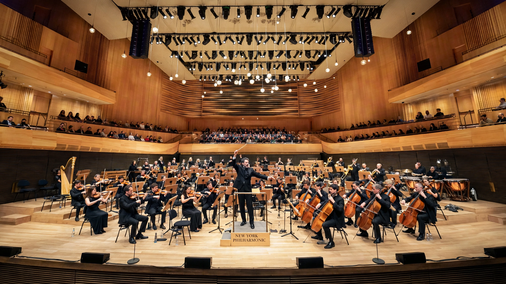

The New York Philharmonic is an American symphony orchestra based in New York City. Founded in 1842, it is one of the oldest musical institutions in the United States and one of the "Big Five" American orchestras. Its home is David Geffen Hall at Lincoln Center.
Founded as the Philharmonic Society of New York by Ureli Corelli Hill, the orchestra gave early American performances of Beethoven symphonies. Music directors and chief conductors have included Gustav Mahler, Arturo Toscanini, Leonard Bernstein (1958–1969, its most celebrated tenure), Pierre Boulez, Zubin Mehta, Kurt Masur, Lorin Maazel, Alan Gilbert and Jaap van Zweden. Gustavo Dudamel was announced as next music and artistic director, beginning in 2026.
The Philharmonic is known for its Young People's Concerts under Bernstein, extensive recordings and broadcasts, the 1948 televised debut of Toscanini-era traditions, a historic 2008 concert in Pyongyang, North Korea, and summer Parks concerts. It premiered works including Dvořák's New World Symphony (1893) at Carnegie Hall.